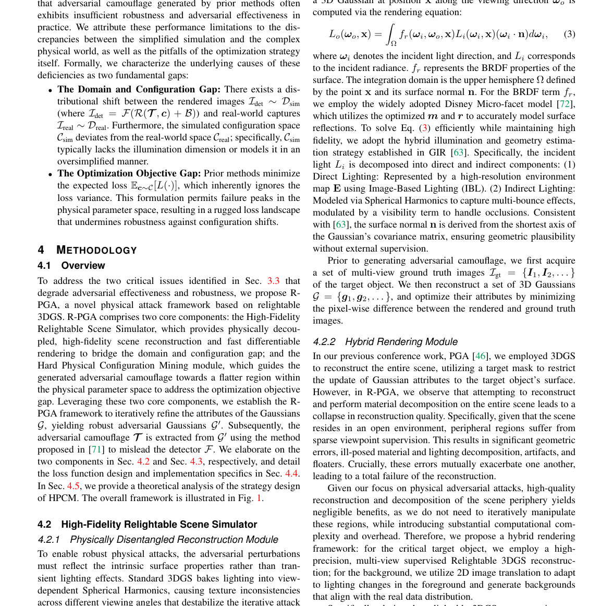
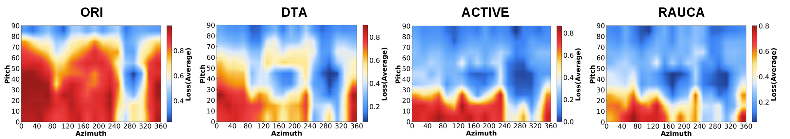
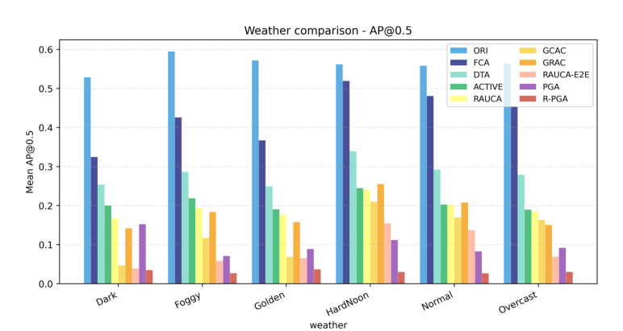
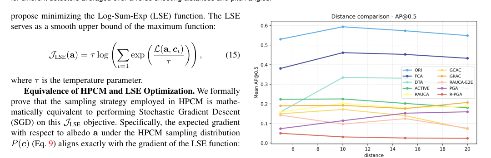
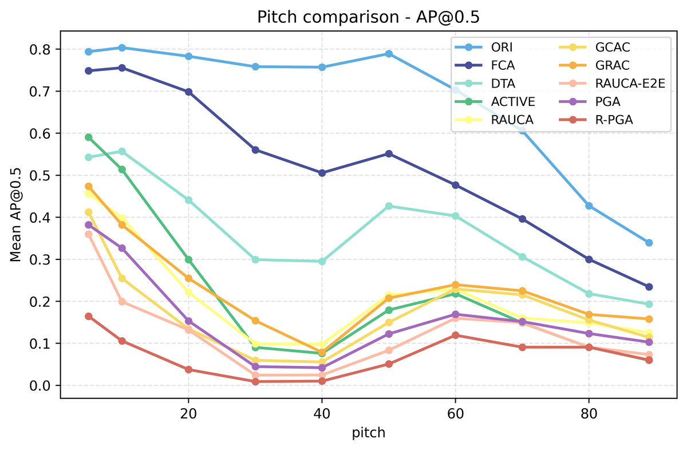
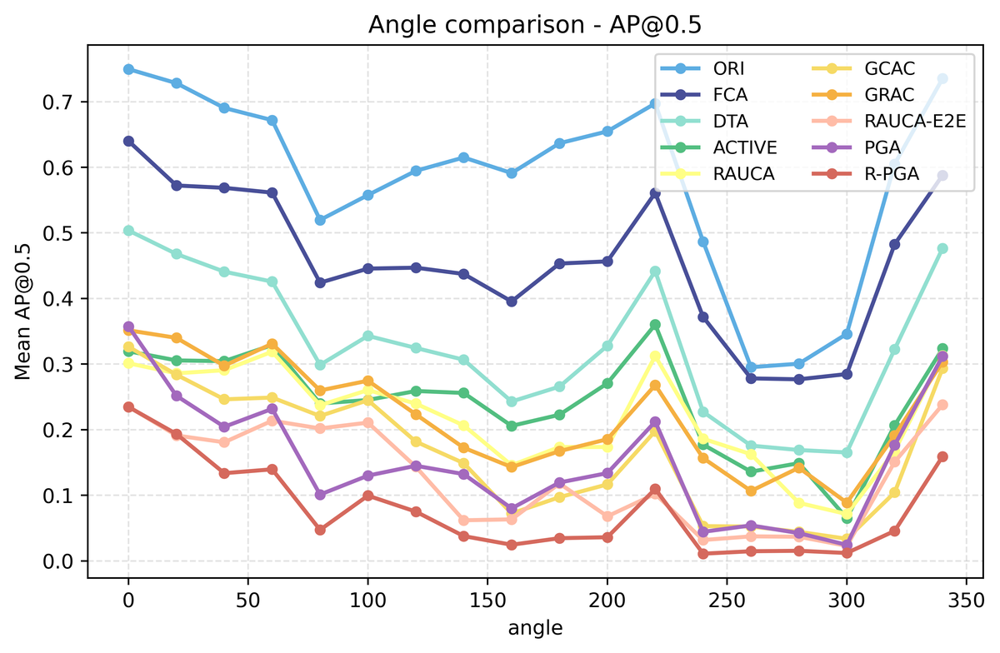
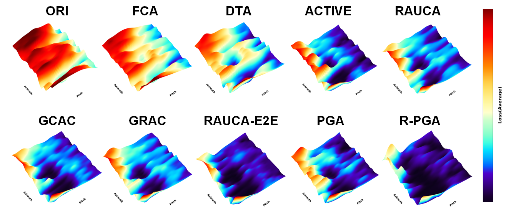

R-PGA：通过 Relightable 3D 高斯泼溅生成强大的物理对抗伪装
简单摘要
其次，以平均性能为目标的标准策略会导致严重的损失情况，使迷彩容易受到配置变化的影响。为了弥补这些差距，我们提出了基于 Relightable Physical 3D 高斯泼溅 (3DGS) 的攻击框架 (R-PGA)。

为了实现这种映射，早期的工作依赖于黑盒近似，而后续的研究利用可微神经渲染器来实现精确的白盒优化。为了解决这些限制，我们提出了基于 Relightable Physical 3D 高斯泼溅 (3DGS) 的攻击框架 (R-PGA)，该框架基于两个核心组件。
核心创新
论文真正新增的设计，首先体现在 首先，对粗略、过于简化的模拟（例如，通过 CARLA）的依赖会导致显着的域差距，将优化限制在有偏差的特征空间。这一步不是换个说法重复问题定义，而是直接改动了方法主线的切入点。
进一步看，为了弥补这些差距，我们提出了基于 Relightable Physical 3D 高斯泼溅 (3DGS) 的攻击框架 (R-PGA)。作者这样安排，是为了让前面的表示、约束或训练信号继续影响后面的求解链路。
进一步看，概述为了解决降低对抗有效性和鲁棒性的两个关键问题，我们提出了 R-PGA，一种基于可重新启动 3DGS 的新型物理攻击框架。作者这样安排，是为了让前面的表示、约束或训练信号继续影响后面的求解链路。
进一步看，为了绕过代价高昂的内部最大化，同时保持对困难示例的关注，我们建议最小化 Log-Sum-Exp (LSE) 函数。作者这样安排，是为了让前面的表示、约束或训练信号继续影响后面的求解链路。
进一步看，为了解决降低对抗有效性和鲁棒性的两个关键问题，我们提出了 R-PGA，一种基于可重新启动 3DGS 的新型物理攻击框架。作者这样安排，是为了让前面的表示、约束或训练信号继续影响后面的求解链路。
技术细节
为了从根本上解决这个问题，我们使用显式的基于物理的渲染（PBR）属性来增强高斯基元。我们用基于物理的着色模型替换标准颜色渲染。具体来说，沿观察方向的 3D 高斯分布的出射辐射率通过渲染方程计算。作者这样设计，是为了把这一节的输入、约束和输出关系讲清楚。
对于 BRDF 项，我们采用广泛采用的 Disney Micro-facet 模型，该模型利用优化后的模型来准确地模拟表面反射。然后，我们重建一组 3D 高斯，并通过最小化渲染图像和地面真实图像之间的像素差异来优化它们的属性。然而，在 R-PGA 中，我们观察到尝试在整个场景上重建和执行材质分解会导致重建质量崩溃。这一步的作用，是把当前结果继续传给后面的模块或训练目标。
3 预赛
这一节先处理的是 本节介绍 3D 高斯分布 (3DGS) 和物理对抗攻击公式，然后分析模拟保真度和优化目标中的先前限制。作者这样设计，是为了先把输入表示、约束条件或中间状态整理成后续模块能直接使用的形式。
3.1 3D 高斯泼溅
为了重建新场景，3DGS 只需要来自不同视点的少量图像作为训练输入。从 SfM 初始化的点云开始，它优化和调整每个点的参数，使渲染与真实图像非常相似。作者这样设计，是为了把这一节的输入、约束和输出关系讲清楚。
$$ \boldsymbol{g}(\boldsymbol{x}) = exp(-\frac{1}{2}(\boldsymbol{x}-\boldsymbol{\mu_g})^T\boldsymbol{\Sigma}_g^{-1}(\boldsymbol{x}-\boldsymbol{\mu_g})), $$
这条式子把前面若干观测、条件或中间特征，经过一个显式模块映射成新的状态变量。它的意义在于把复杂流程压缩成清晰的函数接口，方便后续模块继续消费这个中间结果。
3.2 物理攻击的制定
围绕 3.2 物理攻击的制定，物理对抗性攻击的主要目标是生成强大的对抗性伪装，该伪装在现实世界观看和环境条件的分布中仍然有效，表示为。由于直接优化不可微分和复杂的图像是很困难的，因此物理攻击方法采用渲染管道，通过将渲染的前景与。这里，表示从模拟器配置空间采样的物理配置，包括摄像机俯仰角、方位角、拍摄距离和基于图像的照明中使用的环境图。
$$ \min_{\boldsymbol{\mathcal{T}}} \mathbb{E}_{\boldsymbol{c} \sim \mathcal{C}} [ \mathcal{L}_{\text{adv}}(\mathcal{F}(\mathcal{R}(\boldsymbol{\mathcal{T}},\boldsymbol{c})+\mathcal{B}), y) ], $$
放在“预赛”这一部分看，它重点在定义或约束 min_ T 这一项。这条式子给出了训练阶段的优化目标。阅读时可以先看左侧到底在约束什么，再区分右侧每一项对应的是重建误差、正则项还是辅助监督。
3.3 问题分析
围绕 3.3 问题分析，尽管该公式被广泛采用，但我们观察到，现有方法生成的对抗性伪装在实践中往往表现出不足的稳健性和对抗有效性。我们将这些性能限制归因于简化模拟与复杂物理世界之间的差异，以及优化策略本身的陷阱。渲染图像（其中 ）和现实世界捕获图像之间存在分布变化。作者这样设计，是为了把这一节的输入、约束和输出关系讲清楚。
4 方法论
为了从根本上解决这个问题，我们使用显式的基于物理的渲染（PBR）属性来增强高斯基元。我们用基于物理的着色模型替换标准颜色渲染。具体来说，沿观察方向的 3D 高斯分布的出射辐射率通过渲染方程计算。作者这样设计，是为了把这一节的输入、约束和输出关系讲清楚。
对于 BRDF 项，我们采用广泛采用的 Disney Micro-facet 模型，该模型利用优化后的模型来准确地模拟表面反射。然后，我们重建一组 3D 高斯，并通过最小化渲染图像和地面真实图像之间的像素差异来优化它们的属性。然而，在 R-PGA 中，我们观察到尝试在整个场景上重建和执行材质分解会导致重建质量崩溃。这一步的作用，是把当前结果继续传给后面的模块或训练目标。
4.1 概述
为了解决降低对抗有效性和鲁棒性的两个关键问题，我们提出了 R-PGA，一种基于可重新启动 3DGS 的新型物理攻击框架。利用这两个核心组件，我们建立了 R-PGA 框架来迭代细化高斯的属性，产生强大的对抗性高斯。随后，使用误导检测器中提出的方法提取对抗性伪装。
4.2 高保真可重新照明场景模拟器
4.2.1 物理解缠重建模块
为了从根本上解决这个问题，我们使用显式的基于物理的渲染（PBR）属性来增强高斯基元。我们用基于物理的着色模型替换标准颜色渲染。然后，我们重建一组 3D 高斯，并通过最小化渲染图像和地面真实图像之间的像素差异来优化它们的属性。作者这样设计，是为了把这一节的输入、约束和输出关系讲清楚。

$$ L_o(\boldsymbol{\omega}_o, \mathbf{x}) = \int_{\Omega} f_r(\boldsymbol{\omega}_i, \boldsymbol{\omega}_o, \mathbf{x}) L_i(\boldsymbol{\omega}_i, \mathbf{x}) (\boldsymbol{\omega}_i \cdot \mathbf{n}) d\boldsymbol{\omega}_i, $$
这条式子就是渲染方程：出射光由所有入射方向的光照、材质反射函数以及与法线夹角共同积分得到。作者把它写出来，是为了说明夜间场景里的亮度不是直接回归出来的，而是受物理光照传输约束。
4.2.2 混合渲染模块
在我们之前的会议工作 PGA 中，我们使用 3DGS 来重建整个场景，利用目标掩模来限制高斯属性对目标物体表面的更新。然而，在 R-PGA 中，我们观察到尝试在整个场景上重建和执行材质分解会导致重建质量崩溃。在渲染过程中，LBM 充当条件生成器。作者这样设计，是为了把这一节的输入、约束和输出关系讲清楚。
它将目标环境图、地面实况图像和渲染前景的光度线索（由我们的 Relightable 3DGS 生成）作为输入。然后，模型推断相应的背景，确保背景照明与前景的照明条件自然一致。最后，使用 mask 合成完整的场景。这一步的作用，是把当前结果继续传给后面的模块或训练目标。

$$ \mathcal{I}_{\text{gt}}^{\text{obj}} = \text{SAM}(\mathcal{I}_{\text{gt}}, \mathcal{P}_{\text{obj}}) \odot \mathcal{I}_{\text{gt}}=\mathcal{M}_{\text{obj}} \odot \mathcal{I}_{\text{gt}}, $$
放在“方法论”这一部分看，这条式子重点不是孤立地罗列符号，而是交代 I gt obj 如何承接前面的输入并把结果交给后续步骤。
$$ \mathcal{I}_{\text{fg}} = \mathcal{R}(\mathcal{G}_{\text{obj}}, c) \odot \mathcal{M}_{\text{tar}} + \mathcal{I}_{\text{gt}}^{\text{obj}} \odot (\mathcal{M}_{\text{obj}}-\mathcal{M}_{\text{tar}}), $$
这条式子是在定义一个可直接计算的中间量：右侧把相对位置、方向、权重或比例关系组合起来，左侧则把这个组合结果记成后续模块要反复使用的变量。
$$ \mathcal{I}_{\text{bg}} = \mathcal{H}(\mathcal{I}_{\text{fg}}, \mathcal{I}_{\text{gt}}, \boldsymbol{E}), $$
放在“方法论”这一部分看，这条式子重点不是孤立地罗列符号，而是交代 I bg 如何承接前面的输入并把结果交给后续步骤。
$$ \mathcal{I}_{\text{det}} = \mathcal{M}_{\text{obj}} \odot \mathcal{I}_{\text{fg}} + (1 - \mathcal{M}_{\text{obj}}) \odot \mathcal{I}_{\text{bg}}. $$
放在“方法论”这一部分看，它重点在定义或约束 I det 这一项。这条式子是在定义一个可直接计算的中间量：右侧把相对位置、方向、权重或比例关系组合起来，左侧则把这个组合结果记成后续模块要反复使用的变量。
4.3 硬物理配置挖矿模块
围绕 4.3 硬物理配置挖矿模块，我们将这种性质称为固有构型硬度，它源于目标物体的固有几何结构和非伪装区域。为了鼓励优化器在早期阶段全面探索整个配置空间，我们将所有条目初始化为一个高常数值（例如 ）。为了获得对构型固有硬度的稳定、宏观评估，我们采用了基于动量的更新机制。作者这样设计，是为了把这一节的输入、约束和输出关系讲清楚。
这种时间平滑会累积历史梯度，确保高值反映在整个优化轨迹中始终难以攻击的配置。利用这种全局难度信息，我们用难度感知采样机制代替统一采样。在每次迭代中，对配置进行采样的概率与其难度分数成正比，通过 Softmax 分布表示。这一步的作用，是把当前结果继续传给后面的模块或训练目标。
$$ s_i^{(t)} = \mu \cdot s_i^{(t-1)} + (1 - \mu) \cdot \mathcal{L}_{\text{curr}}, $$
放在“方法论”这一部分看。这条式子是在定义一个可直接计算的中间量：右侧把相对位置、方向、权重或比例关系组合起来，左侧则把这个组合结果记成后续模块要反复使用的变量。
$$ P(c_i) = \frac{\exp(s_i / \tau)}{\sum_{j=1}^{M} \exp(s_j / \tau)}, $$
放在“方法论”这一部分看。这条式子描述了多个分量的聚合或逐步合成过程。它通常表示模型如何把局部贡献、概率权重或多项损失累积成最终结果。
4.4 总损失和优化目标
在R-PGA中，我们将混合渲染图像输入受害白盒检测器以获得检测结果。最小化与真实值 具有最大交集 (IoU) 的框的正确类别的置信度。作者这样设计，是为了把这一节的输入、约束和输出关系讲清楚。

| c|cc|cc|cc|c@ 2*Method | One-Stage | Two-Stage | Transformer-based | Average | |||
|---|---|---|---|---|---|---|---|
| (lr)2-7 | Yolo-V3 | YoloX* | FrRCN* | MkRCN* | D-DETR* | PVT* | |
| ORI | 0.5251 | 0.7395 | 0.5712 | 0.6270 | 0.5877 | 0.7312 | 0.6126 |
| FCA | 0.4982 | 0.6550 | 0.3511 | 0.4035 | 0.4070 | 0.6875 | 0.4758 |
| ACTIVE | 0.1934 | 0.3749 | 0.1460 | 0.1841 | 0.2175 | 0.4160 | 0.2376 |
| DTA | 0.3462 | 0.4069 | 0.2292 | 0.3143 | 0.2924 | 0.5600 | 0.3240 |
| RAUCA | 0.1869 | 0.3643 | 0.1474 | 0.1725 | 0.1059 | 0.5081 | 0.2256 |
| GCAC | 0.1207 | 0.3084 | 0.1216 | 0.1614 | 0.0949 | 0.3556 | 0.1793 |
| GRAC | 0.1515 | 0.3695 | 0.1389 | 0.1888 | 0.1052 | 0.4563 | 0.2160 |
| RAUCA-E2E | 0.1121 | 0.1303 | 0.0256 | 0.1305 | 0.0389 | 0.4041 | 0.1333 |
$$ \mathcal{B} = \mathcal{F}(\mathcal{I}_{\text{det}}; \boldsymbol{\theta}_{\mathcal{F}}) = \{\boldsymbol{b}_1, \boldsymbol{b}_2, \dots \}. $$
放在“方法论”这一部分看，这条式子重点不是孤立地罗列符号，而是交代 B 如何承接前面的输入并把结果交给后续步骤。
4.5 理论分析
然而，直接求解内部最大化在计算上很困难，因为它需要在每个训练步骤中对复杂的渲染管道进行昂贵的迭代搜索。这种等价意味着 HPCM 可以有效地优化最坏情况边界，而无需显式的内部循环。这种机制有效地平坦化了崎岖的损失景观，消除了故障峰值并保证了统一的鲁棒性。




实验结论
然后，我们通过数字域实验验证 R-PGA 的有效性，包括广泛的定性和定量比较以及消融研究。随后，我们捕获类似于数字域数据集的图像来构建物理测试集，从而实现跨不同场景的全面定性和定量实验。R-PGA 在所有评估的检测器中实现了最先进的攻击性能。
| c|@ | ORI | FCA | DTA | ACTIVE | RAUCA | RAUCA-E2E | GCAC | GRAC | PGA | R-PGA |
|---|---|---|---|---|---|---|---|---|---|---|
| Yolo-V3 | 0.5251 | 0.4982 | 0.1934 | 0.3462 | 0.1869 | 0.1207 | 0.1515 | 0.1121 | 0.0318 | 0.0227 |
| DINO* | 0.8993 | 0.8903 | 0.8642 | 0.7872 | 0.8460 | 0.7674 | 0.7928 | 0.8778 | 0.8324 | 0.7421 |
| GLIP* | 0.9387 | 0.8732 | 0.7702 | 0.6970 | 0.7144 | 0.7037 | 0.6886 | 0.7589 | 0.7256 | 0.6749 |
| ccc|cc|cc|cc|c@ 2*Relit | HR | HPCM | One-Stage | Two-Stage | Transformer-based | Average | |||
|---|---|---|---|---|---|---|---|---|---|
| (lr)4-9 | Yolo-V3 | YoloX* | FrRCN* | MkRCN* | D-DETR* | PVT* | |||
| 0.0823 | 0.0556 | 0.0864 | 0.1025 | 0.0850 | 0.3445 | 0.1261 | |||
| 0.0681 | 0.0359 | 0.0479 | 0.1545 | 0.0469 | 0.2902 | 0.1073 | |||
| 0.0645 | 0.0344 | 0.0503 | 0.0866 | 0.0567 | 0.2881 | 0.0968 | |||
| 0.0227 | 0.0325 | 0.0223 | 0.0565 | 0.0206 | 0.2521 | 0.0677 | |||
5.1 实验装置
5.1.1 数据集
为了全面验证我们的攻击方法的有效性，我们构建了数字域和物理域的数据集。对于数字域数据集，为了能够与利用 CARLA 模拟环境的现有方法进行直接、公平的比较，我们同样使用从 CARLA 收集的图像构建我们的数据集。随后，我们捕获类似于数字域数据集的图像来构建物理测试集，从而实现跨不同场景的全面定性和定量实验。
5.1.2 目标模型
我们选择了 6 种常用的检测模型架构进行实验，包括一级检测器。Deformable-DETR (D-DETR) 和 PVT ，所有模型都在 COCO 数据集上预训练。
5.1.3 比较方法
我们选择8种最先进的物理对抗攻击方法作为比较基准，包括FCA（AAAI-2022）、DTA（CVPR-2022）、ACTIVE（ICCV-2023）、RAUCA（ICML-2024）、GCAC（IJCAI-2025）、GRAC（ICCV-2025）、RAUCA-E2E (TDSC-2025)。
5.1.4 评估指标
5.2 数字实验
在本节中，我们对 R-PGA 和最先进的方法进行全面比较，展示 R-PGA 的优势。在这些实验中，Yolo-V3 作为白盒攻击的受害者模型，将对抗性伪装转移到其他五个探测器（通篇用 * 标记）以评估可转移性。
5.2.1 数字世界攻击
我们将 R-PGA 的平均数字攻击性能与各种探测器和物理配置的最先进方法进行比较。虽然R-PGA能够使用真实世界的照片直接重建和攻击，但为了确保与其他基于模拟器的方法进行公平比较。R-PGA 在所有评估的检测器中实现了最先进的攻击性能。
5.2.2 向视觉基础模型的可迁移性
5.2.3 可视化
我们在数字领域展示了 R-PGA 与其他攻击方法的检测结果的可视化。结果表明，与 SOTA 方法相比，R-PGA 在这些不同的物理配置中表现出卓越的对抗有效性。
5.2.4 损失情况比较
我们在图 1 的物理配置空间内可视化了不同方法的对抗性损失情况。结果表明，R-PGA 受益于 HPCM 策略和基于 Relightable 3DGS 的高保真混合渲染管线。
5.3 物理实验
5.3.1 实验设置
我们在 1:24 比例的模型车上部署了通过各种 SOTA 方法和 R-PGA 生成的对抗性迷彩。为了构建全面的物理场景数据集，我们从多个视点捕获图像 - 覆盖方位角范围 和 俯仰角 - 距离范围从 20 厘米到 50 厘米。此外，我们系统地结合了三种典型的照明条件来收集数据。
5.3.2 评估结果
| SL | NL | LL | Average | |
|---|---|---|---|---|
| ORI | 0.9091 | 0.9134 | 0.9169 | 0.9131 |
| DTA | 0.7872 | 0.8035 | 0.9074 | 0.8327 |
| ACTIVE | 0.3466 | 0.2425 | 0.3958 | 0.3283 |
| GCAC | 0.6354 | 0.2345 | 0.8151 | 0.5617 |
| GRAC | 0.6144 | 0.4502 | 0.8163 | 0.6270 |
| RAUCA-E2E | 0.3611 | 0.2212 | 0.4534 | 0.3452 |
| R-PGA | 0.3034 | 0.1849 | 0.3637 | 0.2840 |
理解评价
如果把这篇论文放回问题背景里看，它真正的价值在于：我们将这种缺陷归因于模拟和优化的两个基本限制。这说明作者不是只补一个局部模块，而是在重新组织问题该怎样被解决。
最能支撑这个判断的，还是实验给出的证据：其次，以平均性能为目标的标准策略会导致严重的损失情况，使迷彩容易受到配置变化的影响。换句话说，这些设计并不只是概念上更完整，而是实实在在改变了最终结果。
当然，它离真正成熟的方案还有距离：当前方案的局限在于它仍然受制于计算资源、输入质量或场景复杂度，距离真正稳健的大规模部署还有差距。后续更值得继续推进的方向，是 通过揭示当前探测器在复杂动态场景下的漏洞，我们希望这项工作能够为自动驾驶系统中鲁棒感知和防御的未来研究奠定坚实的基础。